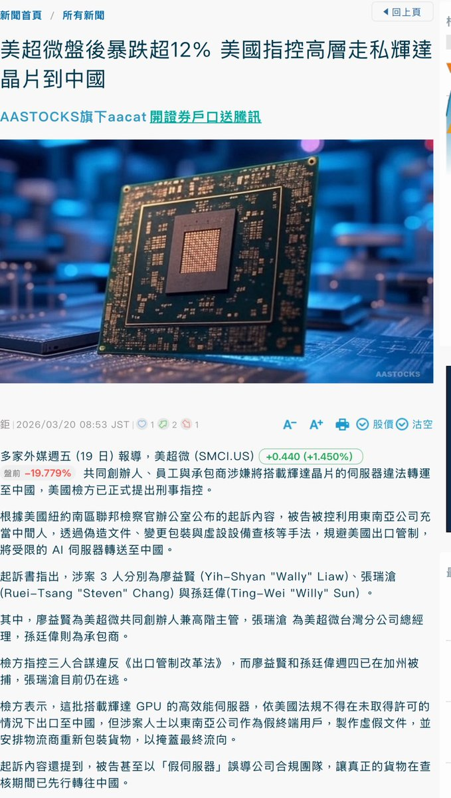

*⁂汐渋鈴蘭⁂*.･ﾟﾟ
@SupernovaLLan
RT @lovelycake: 大家还记得这个炫耀走私显卡的sb不
他的供货商被Fbi抓了😂
和这种人合作真是倒了血霉了🤡
2年前，昆仑巢创始人苏菂，公开炫耀如何逃避美国的制裁，走私了200片英伟达的H200显卡。
视频里直接展示了SuperMicro的标识。… https…

小蛋糕(日本勇者村）
@lovelycake
大家还记得这个炫耀走私显卡的sb不
他的供货商被Fbi抓了😂
和这种人合作真是倒了血霉了🤡
2年前，昆仑巢创始人苏菂，公开炫耀如何逃避美国的制裁，走私了200片英伟达的H200显卡。
视频里直接展示了SuperMicro的标识。 https://t.co/Pwg2dcpFdm